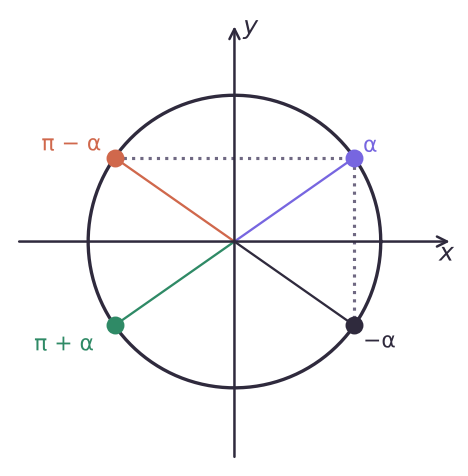
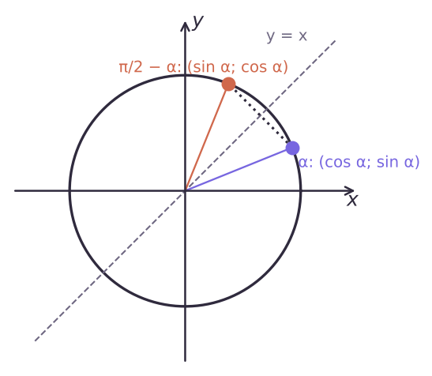

Любой угол — к острому


| sin | cos | tg | |
|---|---|---|---|
| π/2 − α | cos α | sin α | ctg α |
| π/2 + α | cos α | −sin α | −ctg α |
| π − α | sin α | −cos α | −tg α |
| π + α | −sin α | −cos α | tg α |
| 3π/2 − α | −cos α | −sin α | ctg α |
| 3π/2 + α | −cos α | sin α | −ctg α |
| 2π − α | −sin α | cos α | −tg α |
Формулы приведения: функция и знак